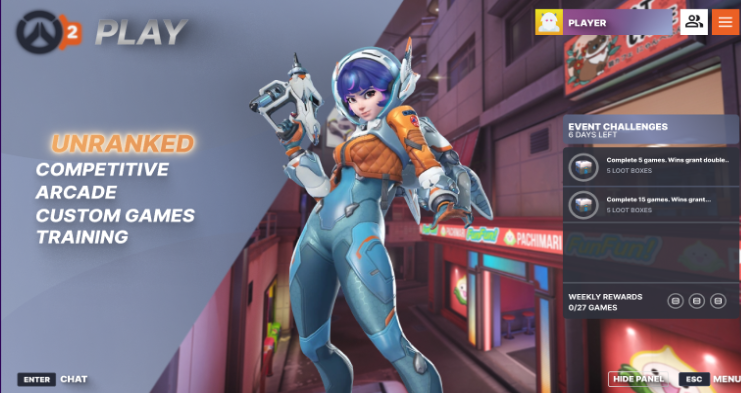

01. Overwatch 2 UX/UI Case Study
What it is: A 7-week UX/UI redesign case study for Overwatch 2 focused on improving game flow, interface clarity, and accessibility (color blindness).
- Role: UX Researcher · UI Designer · Usability Tester
- Process: journey map → paper prototype → flowchart → wireframes → usability tests → UI mockups
- Tools: Figma · Adobe Photoshop
PDF · UX/UI case study